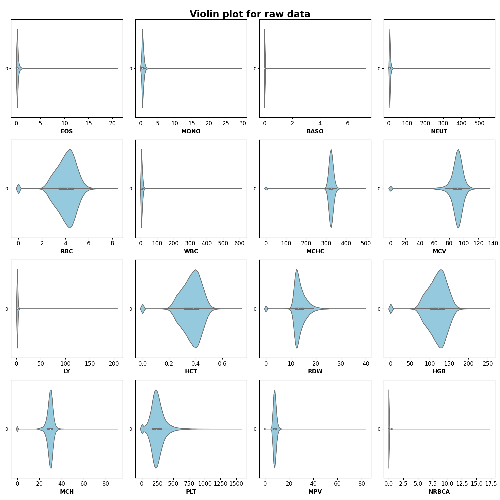
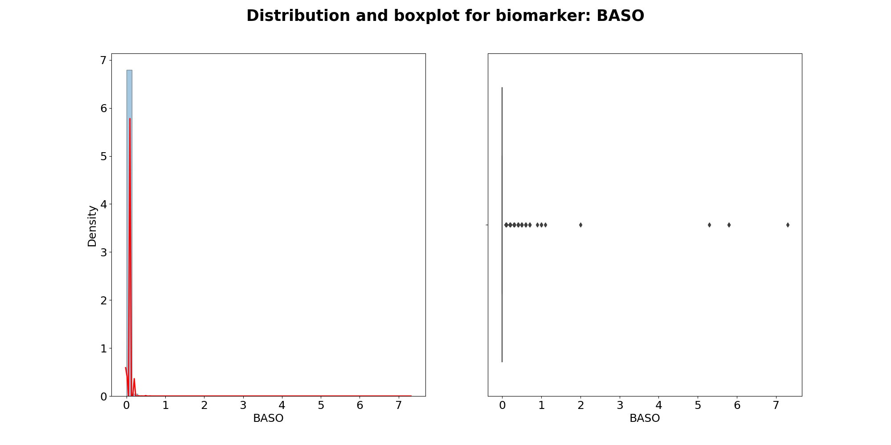
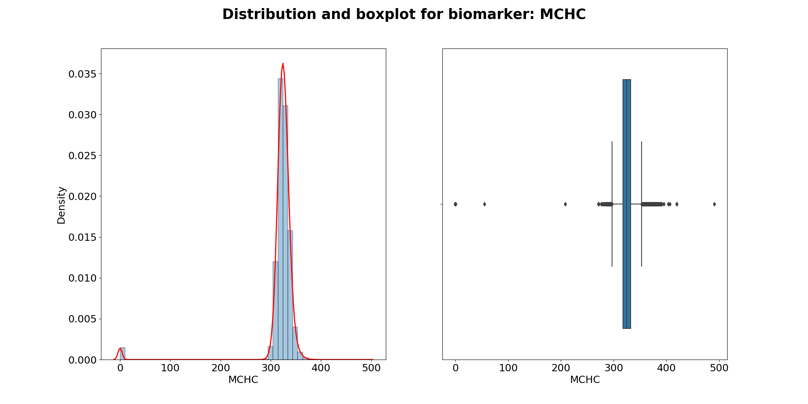
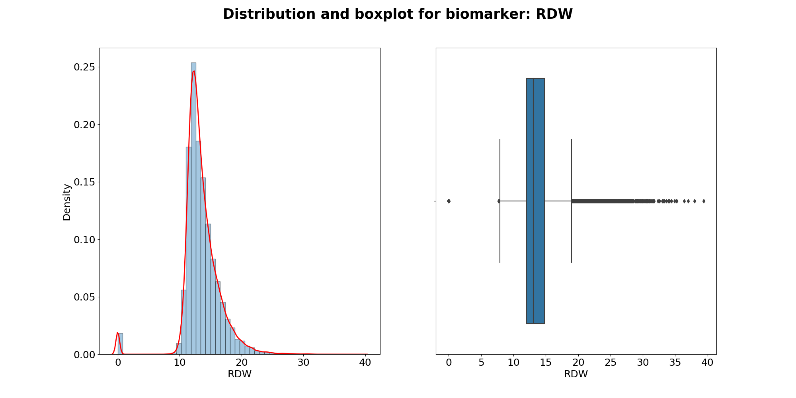
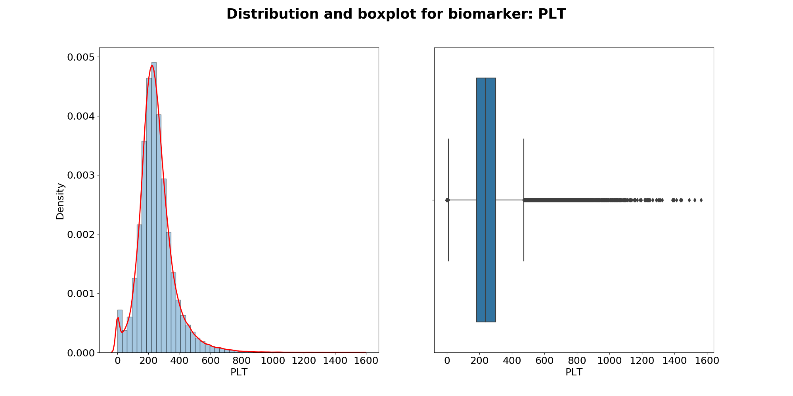
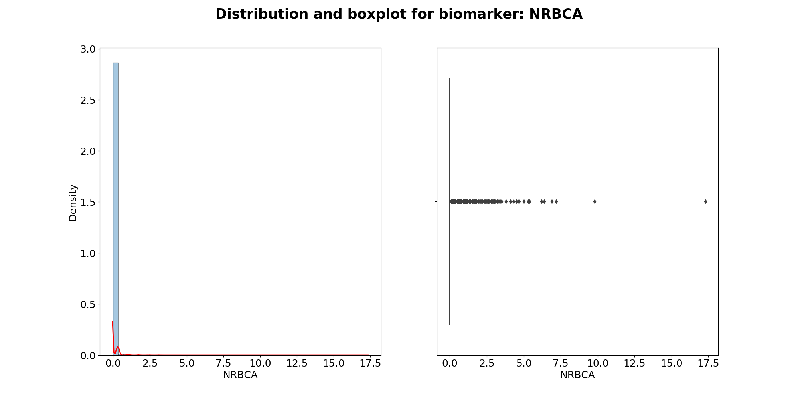

Note
Click here to download the full example code
Biomarker distributions in dataset¶
Using seaborn library to visualise biomarker distributions
Import the relevant libraries first
10 11 12 13 14 15 16 17 | import numpy as np
import pandas as pd
import matplotlib.pyplot as plt
import seaborn as sns
from sklearn import preprocessing
import warnings
warnings.filterwarnings("ignore")
from pkgname.utils.widgets import TidyWidget
|
Data handling¶
First, let’s define the data set path and relevant variables of interest
25 26 27 28 29 30 31 | path_data = 'datasets/pathology-sample-march-may.csv'
FBC_codes = ["EOS", "MONO", "BASO", "NEUT", "RBC", "WBC",
"MCHC", "MCV", "LY", "HCT", "RDW", "HGB",
"MCH", "PLT", "MPV", "NRBCA"]
INTEREST_cols = ["_uid", "orderCode", "result", "dateResult"]
|
Next, import only variables of interest and FBC panel results
37 38 39 40 41 42 43 44 45 46 47 48 49 50 51 52 53 54 55 56 57 58 | df = pd.read_csv(path_data, usecols=INTEREST_cols)
df = df.loc[df['orderCode'].isin(FBC_codes)]
df = df.dropna() # drop records of patients with NaN _uid
df.reset_index(drop=True, inplace=True)
# Define function to set pid (patient ID) sorted by datetime
def change_pid_datetime_format(df):
df['pid'] = df['_uid'].str.extract('(\d+)').astype(int)
pid_col = df.pop('pid')
df.insert(0, 'pid', pid_col)
df.drop('_uid', inplace=True, axis=1)
df.sort_values(by=['pid', 'dateResult'], inplace=True)
return df
|
Transform data using TidyWidget¶
65 66 67 68 69 70 71 72 73 74 75 76 77 78 79 80 81 82 83 84 | # Parameters
index = ['_uid', 'dateResult', 'orderCode']
value = 'result'
# Create widget
widget = TidyWidget(index=index, value=value)
# Transform (keep all)
transform, duplicated = \
widget.transform(df, report_duplicated=True)
# Set pid for each patient and sort accordingly
transform_fmt = change_pid_datetime_format(transform)
# Transform (keep first)
transform_first = \
widget.transform(df, keep='first')
# Set pid for each patient and sort accordingly
transform_first_fmt = change_pid_datetime_format(transform_first)
|
Preprocessing step: normalise¶
91 92 93 94 95 96 97 98 99 100 101 102 | # Obtain the biomarkers DataFrame only
biomarkers_df = transform_fmt.iloc[:,2:].dropna()
biomarkers_df_copy = biomarkers_df.copy(deep=True)
biomarkers_data = biomarkers_df.values
# Normalise using minmax scaler
min_max_scaler = preprocessing.MinMaxScaler()
val_scaled = min_max_scaler.fit_transform(biomarkers_data)
biomarkers_df = pd.DataFrame(val_scaled, columns=[col for col in biomarkers_df_copy.columns])
# Can use df.melt() method
# biomarkers_dfm = biomarkers_df.melt(var_name='biomarkers')
|
Plot histograms for each biomarker¶
109 110 111 112 113 114 115 116 117 | for col in biomarkers_df_copy.columns:
plt.figure(figsize=(15,10))
plt.title(f'Histogram for biomarker: {col}', fontweight='bold', fontsize=20)
plt.xlabel('Normalised value', fontsize=16)
plt.ylabel('Density', fontsize=16)
plt.xticks(fontsize=16)
plt.yticks(fontsize=16)
hist = biomarkers_df_copy[col].hist(bins=50)
hist.plot(grid=True, figsize=(15,10))
|
- 

- 


- 


- 

- 
- 
Total running time of the script: ( 0 minutes 27.416 seconds)